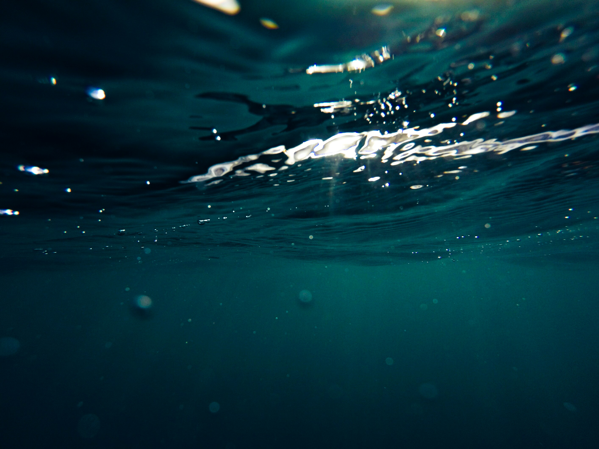

해양 생태계의 숨겨진 세계, 해양 식물플랑크톤과 기생성 원생생물의 다양성과 생태적 기능, 그리고 해양 먹이망에서의 역할을 연구합니다.
해양부유생물학연구실은 해양 미생물과 원생생물의 다양성, 생태적 기능 및 생물학적 상호작용을 연구합니다. 특히 와편모조류와 규조류를 감염시키는 기생성 원생생물, 그리고 해양 미생물 먹이망에서 핵심적인 역할을 하는 혼합영양성 와편모조류에 주목하고 있습니다.
부경대학교 해양학전공 해양부유생물학연구실은 해양 미생물과 원생생물의 다양성, 생태적 역할, 그리고 분자생물학적 특성을 깊이 있게 연구하는 생물해양학 연구실입니다.
우리 연구실은 한국 연안에서 발견되는 신종 기생성 미세편모조류를 포함한 기생성 원생생물을 중점적으로 연구합니다. 이들 기생생물이 와편모조류와 규조류를 어떻게 감염시키는지, 용존유기탄소(DOC) 생산에 미치는 영향은 무엇인지, 그리고 유해적조를 어떻게 조절하는지 탐구합니다. 이를 위해 메타지노믹스, 분자계통학, 정밀 현미경 분석을 통합적으로 활용하여 미지의 미생물들이 가진 감염 메커니즘과 에너지 순환 역할을 규명합니다.
해양 미생물 생태학과 생물해양학 분야에서 세 가지 핵심 연구 주제를 중심으로 탐구를 진행합니다.
한국 연안의 와편모조류와 규조류를 감염시키는 기생성 원생생물의 다양성과 생태적 역할을 조사합니다. 우리는 형태학 및 분자계통학을 통해 새로운 기생성 미세편모조류(Amoebophrya, Euduboscquella, Pirsonia, Pseudopirsonia)의 특성을 규명해 왔습니다. 기생생물이 Cochlodinium polykrikoides 및 Akashiwo sanguinea와 같은 유해적조 생물군을 어떻게 제어하는지, 감염이 용존유기탄소(DOC) 생산을 촉진하고 해양 미생물 군집을 어떻게 재편하는지 분석합니다. 연구 방법으로는 메타지노믹스, 정량 PCR(qPCR), 단일 세포 PCR, 계통학 및 전자 현미경 분석이 포함됩니다.
형태학적 동정과 분자생물학적 기법을 병행하여 남해 및 대한해협을 포함한 한국 동남해역의 원생생물 군집 구성과 계절적 동태에 대한 체계적인 조사를 수행합니다. 광독립영양, 종속영양, 혼합영양 원생생물(와편모조류, 섬모충류, 규조류, 미세편모조류)의 시공간적 분포를 기록하고, 수온, 염분, 영양염류, 해류 등의 해양환경 요인이 군집 구조를 어떻게 결정하는지 밝혀냅니다. 이 데이터는 한반도 연안 수역의 생태계 변화와 유해 생물종의 확산을 이해하기 위한 중요한 기초 자료가 됩니다.
유해적조(HABs)는 한국 연안의 해양 생태계와 양식 산업에 심각한 위협이 되고 있습니다. 우리는 Cochlodinium polykrikoides, Alexandrium spp., Karenia spp., Dinophysis spp. 등 주요 적조 유발 종의 생태, 독소 생산 및 발생 동태를 연구합니다. 정량 PCR(qPCR), 다중 탐지 어세이, 현장 모니터링을 활용하여 조기 경보 및 종 판별을 위한 신속한 분자생물학적 도구를 개발합니다. 또한, 기생성 원생생물(예: Amoebophrya)이 적조를 소멸시키는 천연 생물 제어 인자로서 어떻게 작용하는지, 그리고 환경 요인이 적조의 발생과 소멸을 어떻게 유도하는지 조사합니다.
연구 협력, 대학원 진학 및 기타 문의
Tel:
Fax:
부산광역시 남구 용소로 45 (우. 48513)
부경대학교 지구환경시스템과학부 해양학전공
해양공동연구관(C13) 317호 해양부유생물학연구실
해양 미생물 생태학, 원생생물학 및 해양학에 관심이 있는 열정적인 학부생,
석/박사 과정 지원자를 환영합니다.